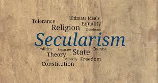
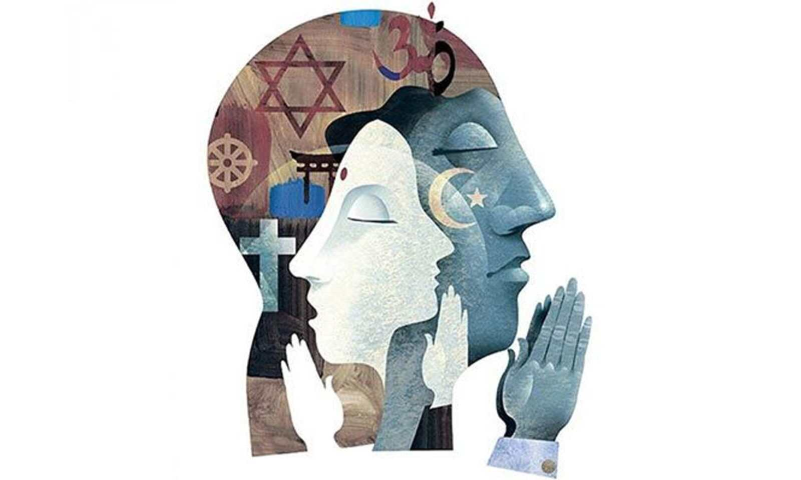

Secularism
Religion should not have influence or be involved in the organization of society.

Introduction
We live in a society where many different people exist and each person is special in their own way. They vary in skin color, culture, religion, and social class, which can lead to different social groups based on these factors. Some of these people are Hindus, Muslims, Sikhs, Christians and others. When people from various religious backgrounds live together peacefully, happily and with respect for each other's religions, it shows the idea of secularism.
Meaning Of Secularism
There is no official religion in India, and all citizens have the freedom to practise any religion of once their choice.
In some countries like the United States, France, Turkey, India, Mexico, South Korea and others the government doesn't promote or favor any specific religion as its official one. Instead, all religions are treated equally, and no particular religion is given special preference or official status.
Secularism In India
India gained independence from British rule on August 15, 1947. Secularism is an essential principle that was included in the Indian constitution. Pandit Jawaharlal Nehru, India's first prime minister, played a significant role in promoting and establishing secular values in the country's history.
The Forty-second Amendment to the Constitution of India, passed in 1976, further emphasized India's secular identity. The Preamble of the Constitution explicitly declares India as a secular nation. According to the Constitution, India does not have an official state religion. Additionally, schools that are fully owned by the state are not allowed to promote religious teachings (as stated in Article 28), and taxpayer funds cannot be used to support any specific religion (as stated in Article 27). These constitutional provisions demonstrate India's commitment to maintaining a secular society.
According to P.B. Gajendragarkar, a former Chief Justice of India, secularism is defined as follows: "The state does not owe loyalty to any particular religion. As such, it is not irreligious or anti-religious. It gives equal freedom to all religions."

Secularism in other countries
|
Secularism in india
|
The First Amendment of the U.S. Constitution, which is a crucial part of the Bill of Rights, establishes the principle of separation between state and religion. It states, "Congress shall make no law respecting an establishment of religion, or prohibiting the free exercise thereof..."
This means that the government cannot establish an official state religion or favor any particular religion. It also ensures that individuals have the freedom to practice their religion without interference from the government.
In February 2004, France passed a law known as the "French law on secularity and conspicuous religious symbols in schools." This law bans students from wearing any conspicuous religious symbols or attire in public schools. The law specifically targets symbols such as Islamic headscarves (hijabs), Jewish skullcaps (kippahs), large Christian crosses, and other religious signs that are deemed to be overt and conspicuous.
|
India's approach to secularism is different from the strict separation of religion and state as seen in the United States. In India, the concept of secularism is often referred to as "principled distance" rather than "strict separation."
The Indian Constitution does not entirely separate religion and state, and there are instances where the state can intervene in religious affairs to address certain practices that are considered harmful or discriminatory.
Eg.- Banning Untouchability and Triple Talaq.
As mentioned earlier, India's approach to secularism includes a strategy of non-interference in religious affairs. Unlike countries like France, India does not adopt a strict separation between religion and the state.
|
Characteristics
State does not have its own religion.
The state does not have an official religion. It follows the principle of secularism, which means it remains neutral and does not favor any particular religion.
Right of worship to all.
In secularism, one of the fundamental principles is the right of worship for all individuals.
All religion are equal
The principle of religious equality is a core element of secular states, and it means that the government treats all religions and their followers impartially and without any preference.
No discrimination on the base of religion.
In a secular state, the government and its institutions are expected to treat all individuals and communities equally, irrespective of their religious beliefs or affiliations.
All religion people are free to propagate profess any religion.
Secularism ensures that people are not restricted or coerced into following a specific religion and have the right to express and share their beliefs openly.
Humanism (Humanism is supreme religion is not supreme.)
Humanism is a philosophical and ethical approach that places human values, interests, and well-being at the center of attention.
Conclusion
The concept of secularism has been a significant development in modern societies, particularly in the context of governance and the relationship between religion and state.